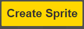
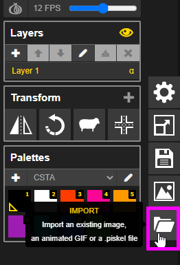
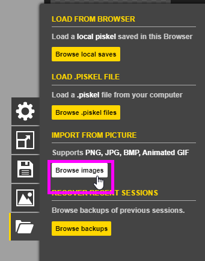
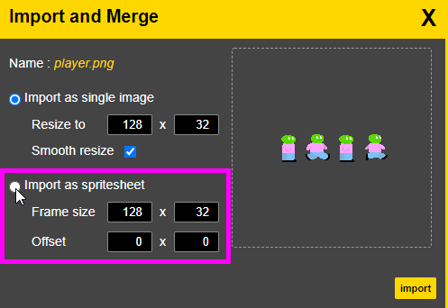
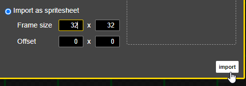
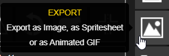
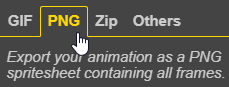
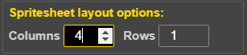
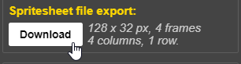

Game Animation
Artists often create pixel art animations to be used in retro-style games. Follow the instructions to modify an existing game with new custom art! Google Chrome is recommended for this activity.
The Existing Game
For the purposes of this exercise, there is an existing game within a Glitch project to use. Start by creating a remix of the game, and playing it.
- Go to the Existing Game Project
- Click the "Remix" button in the upper right
- Click the "Run" button to run the game
- Expand the Preview area so there is room to play the game
Play through the game to see how it works!
Modifying the Player Walk Cycle
Next, create your own version of the player walk cycle. At this point, try not to change too much - it will always be possible to come back and further customize the player.
Importing the Existing Player
Follow the steps below to import the player sprite.

- Right click the picture above and select "Save image as..."
- Save the image on your computer with player.png as the name
- Open a new web browser tab, and go to www.piskelapp.com
- Click the "Create Sprite" button
 - In the sprite editor, on the right, click the "IMPORT" folder icon
 - In the menu that appears, click the "Browse images" button
 - Find the saved player.png file and select it for opening
- Select the "Import as spritesheet" option
 - Set the Frame size to 32 x 32
- Click the "import" button
 - If a pop-up appears asking if you want to continue, click the "OK" button
Now the four frames of the player sprite should be ready for editing!
Modifying the Player
Now, the next step is to update the player sprite a little bit.
- Make a small change to the player, like the color of their head
- Do not change the number of frames
- Do not change the size of the canvas
- Do not change the basic "Walk Cycle" frames
- Make sure to change each frame of the animation
- Click the "Export" button on the right side of the window
 - Make sure "Scale" is set to 1.0x
- In the EXPORT menu, select the "PNG" tab
 - Change the "Spritesheet layout options" so there are 4 columns
 - In the "Spritesheet file export" part, click the "Download" button
 - Save the file somewhere with the name player.png
Now the updated player should be ready to enter the existing game!
Putting the New Player in the Game
It's time to update the game itself with the new player. You will have to drag your saved file into the Assets area and make sure it has the proper name to match the old name!
Run the program again, and at this point, the new player should appear!
Next Steps
After the follow-along activity, there are some challenges to complete. Or, you can feel free to get creative and do whatever you want to do with Piskel!